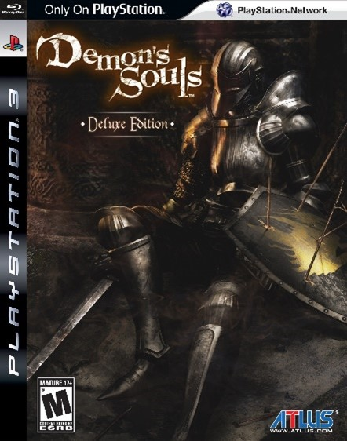

Sony’s Iron Grip on one of From Software’s most beloved IP: The reason and story behind it
Sony has had the ball in their court for over a decade in regards to one of From Software’s most beloved IPs: Bloodborne. Ever since the release of the game, Bloodborne has had only one addition to it’s IP in the form of The Old Hunters DLC (DownLoadable Content) and has not been touched ever since, which is an outlier in From Software’s (hereby occasionally referenced as “fromsoft” for short) other titles such as Dark Souls (a trilogy), Armored Core (an old series with their latest addition being the 6th), allegedly planned sequels to Elden Ring and even King’s Field, one of fromsoft’s oldest titles from 2000 (receiving 4 main titles and a few side games, including a mobile version). The reason behind this, is the simple fact that Sony is the publisher of Bloodborne, unlike From Software’s other title’s which are majorly published by Bandai Namco, giving Sony the rights to the specific IP of Bloodborne. However, what does it mean to hold the rights to an IP? What even is an IP? Before continuing further, I will discuss what an IP really means and the weight it holds within the Gaming Industry.

IP is an abbreviation for Intellectual Property, and the basic definition of an Intellectual Property is “a category of property that includes intangible creations of the human intellect”, usually owned by either a company or an individual person if they are self-employed, of which are safeguarded against unauthorised use (1). In the official UK government website(2), the types of Ips that are listed, which hold particular relevance in the Games Development Industry, include:
- Copyright, the protection of the creative and artistic expression of a game, such as it’s code, artwork, music, etc., ensuring that no design or visual characteristic is used in another game.
- Patents, the protection of specific game mechanics, such as Nintendo’s patent of the D-Pad (directional pad)(3), Bandai Namco’s patent on a minigame included on loading screen(4) or Kuro Game’s most recent attempt on creating a specific patent on their “Quick Swap” mechanic, to do with character switching in combat(5).
- Trademarks, the protection of the branding elements of a game, including a game’s logo, name or other. A specific example is when in 2017, bethesda struck down an indie game studio for attempting to call their game “Prey for the Gods”, which would infringe on Bethesda’s trademark of Prey (2017)(6).
These intangibles hold great value in this increasingly knowledge-based economy and by definition, an IP requires heavy investments in the skilled labour of multiple great minds – naturally, companies or individuals would not want their hard work to be taken by others with a ctrl+c and ctrl+v. However, patents have an expiration date, and it’s only a matter of a decade or two before it becomes public domain unless it’s renewed. Patents can also be “lended” to other companies, such as the case of Demon Souls (also by fromsoft) and it’s remake, which was developed by Bluepoint Games. In the case of Games Development, the game’s developer will not necessarily be the patent holder of their own work, unless they are the publisher. Otherwise, the publisher for that game will hold the IP to that game title. IPs can also be sold and bought, as can be exampled by Risk of Rain 2, with Hopoo Games selling this IP off to Gearbox Publishing (7).

With all of this in mind, it makes the picture a little clearer on why From Software hasn’t been able to do anything with Bloodborne. However, to understand the full timeline, lets start from the beginning: Announced in 2008 and released 2009, Fromsoftware started development on Demon Souls, a playstation 3 exclusive and a spiritual successor to their King’s Field series, and would innovate on the genre of action RPGs with it’s slower, more methodical style of combat and many other core elements that would later on define the souls-like genre. However, Demon souls was not very well received at all; when it was revealed in the Tokyo Game Show a week after it’s announcement, many people thought that it was too hard, and that the combat was “incomplete”, with even the Sony president Shuhei Yoshida being incredibly dismissive of the game, calling it “an unbelievably bad game”(8). With this, Demon souls was initially very restricted upon release, with Sony not even publishing it to the western audience and it’s reception within Japan was initially very low, with the game only picking up on popularity later on.
Not particularly impressed with the performance on Demon Souls, Sony had cut ties with fromsoft and left them to their own devices, where later they teamed up with Bandai Namco to create the first Dark Souls, which was a massive hit, much more so than Demon Souls ever was, in fact reaching up to 150 times the amount of sales. Therefore, one could conclude that Sony regretted the decision to let fromsoft go, and during the development of Dark Souls II, Sony had indirectly approached Fromsoft through Japan Studio (a subsidiary company) concerning the development of a title, which the concept of Bloodborne sprouted from.

The lovecraftian-inspired title was then revealed in 2014 at the E3 games event and later released in march of 2015, this time with a global release and henceforth bought a “universal acclaim” from critics(9). Sony then permitted fromsoft to also develop a DLC for Bloodborne, of which The Old Hunters was released in November of the same year of release. Henceforth, for reasons unknown to anybody, Sony has not done anything to do with the Bloodborne IP they had aquired, apart from some arbitrary references in games such as Astro Bot(10). The director behind Bloodborne, Hidetaka Miyazaki, had indirectly stated in an interview that he regrets not being able to work on the Bloodborne IP further, and that a sequel is “not for him to decide”(11), despite saying that it was his favourite project to work on, as it was the one that most struck him.
References:
(1) https://www.investopedia.com/terms/i/intellectualproperty.asp(2) https://www.gov.uk/intellectual-property-an-overview
(3) https://patents.google.com/patent/US4687200A/en?oq=US4687200A
(4) https://patents.google.com/patent/US5718632
(5) https://patents.google.com/patent/CN120305687A/en?oq=CN120305687A
(6) https://nichegamer.com/bethesda-stops-indie-studio-from-using-prey-in-prey-for-the-gods-name/
(7) https://www.eurogamer.net/gearbox-acquires-risk-of-rain-ip
(8) https://en.wikipedia.org/wiki/Demon%27s_Souls – Release section
(9) https://en.wikipedia.org/wiki/Bloodborne - Reception section
(10) https://www.thegamer.com/playstation-finally-acknowledges-bloodborne-with-astro-bot-preorder-bonus-fromsoftware-ps5-exclusive/
(11) https://www.gamesradar.com/im-not-the-one-to-decide-says-hidetaka-miyazaki-of-bloodborne-2/